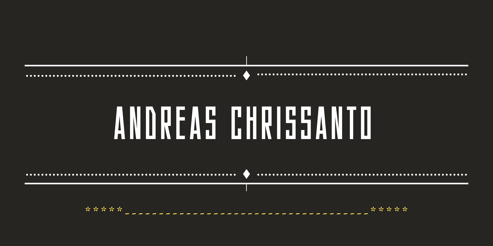
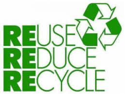

 PADA HALAMAN PORTOFOLIO INI SAYA AKAN MENJELASKAN TENTANG PENGOLAHAN DAUR ULANG YAITU REDUCE, REUSE RECYCLE |
||||||
Apa Itu Reduce, Reuse, Recycle?Mungkin kamu sudah enggak asing dengan ketiga istilah tersebut, ya. Nah, kali ini mari kita bahas bersama tentang apa itu reduce, reuse, dan recycle atau yang biasa disingkat 3R, mulai dari pengertian hingga contohnya. Nah, sekarang kita simak bersama penjelasannya, yuk! |
||||||
REUSE REDUCE RECYCLEReuse berarti menggunakan kembali sampah yang masih dapat digunakan untuk fungsi yang sama ataupun fungsi lainnya. Reduceberarti mengurangi segala sesuatu yang mengakibatkan sampah. Dan Recycle berarti mengolah kembali (daur ulang) sampah menjadi barang atau produk baru yang bermanfaat.
|
 | |||||
PENGELOLAAN SAMPAH 3R//REUSE REDUCE RECYCLESampah merupakan masalah yang sangat rumit jika tidak segera diatasi,, perlu adanya pengelolaan sampah. kita kenal istilah 4R reuse reduce recycle dan replace berikut contohnya |
||||||